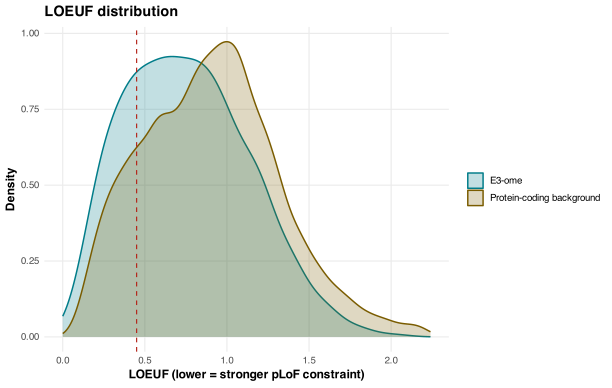
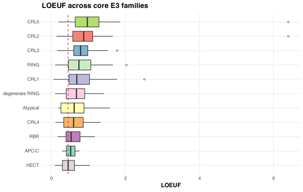
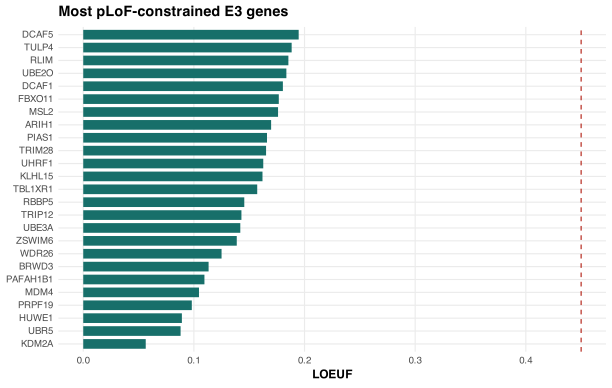
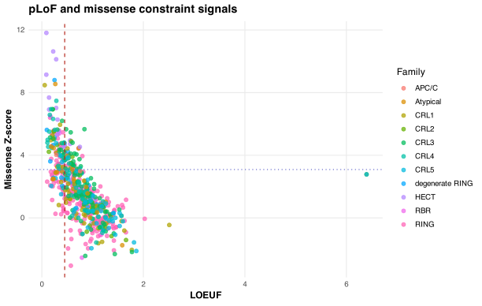

Interpretation
Population genetic constraint is not the same as cellular essentiality, disease association, experimental functional importance, or therapeutic suitability. Missing or flagged values are retained in the tables but should not be read as evidence that a gene is unconstrained.
Key Findings
627 matched E3 genes had reliable LOEUF values. 152 were below the gnomAD v4.1.1 high-constraint threshold of 0.45.
Most constrained E3s
The ranked table highlights E3 genes with the lowest LOEUF values, including genes where pLoF depletion is especially strong in population data.
Family-level signal
The 11 core E3 families are compared with non-parametric tests and confidence intervals; dual-family genes contribute once to each relevant family.
Quality-aware interpretation
Low-coverage, poor-mappability and other gnomAD constraint flags remain visible, and flagged or missing values are not treated as unconstrained.



pLoF and Missense Constraint
Hover or tap a point to inspect a gene. Dual-family genes are plotted once in each core family.

Family Summary
Core E3 families are derived from the detailed E3-ome protein-class annotations. Dual-family genes are counted once in each relevant family.
Interactive E3 Table
Search a gene symbol, sort columns, and filter by family, LOEUF, transcript selection and quality status.
Loading interactive table from data/e3_gnomad_constraint.csv...
Methods note. Values are gnomAD v4.1.1 gene-level constraint summaries joined to the E3-ome. LOEUF describes depletion of predicted loss-of-function variation in population data and should not be interpreted as replicate-level differential expression, direct cellular essentiality, disease causality, experimental functional importance, or therapeutic suitability. Source files: E3-ome gene list and gnomad.v4.1.1.constraint_metrics.tsv.bgz. Transcripts were selected from Ensembl protein-coding gnomAD rows using MANE Select where available, then Ensembl canonical transcripts; because the supplied E3 workbook does not contain Ensembl gene IDs, matching used checked gene-symbol fallback and reports unmatched or ambiguous records. E3 family summaries use 11 core families: RING, degenerate RING, HECT, RBR, CRL1, CRL2, CRL3, CRL4, CRL5, Atypical and APC/C. Genes annotated to more than one family are counted once in each relevant family-level analysis. This atlas is an extension of the published E3-ome resource. The analyses presented here were generated using the E3-ome framework together with publicly available datasets. We kindly request that users of this resource cite: Chua NK et al. Cell (2026). The E3-ome gene-centric compendium reveals the human E3 ligase landscape. DOI: 10.1016/j.cell.2026.01.029.
Download joined CSV